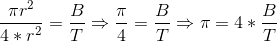

Valor real de PI:
3.1415926535897932
Aproximando PI
Esta aproximação de pi se baseia em um método estatístico para cálculo de seu valor.
Considere que um pessoa joga dardos neste alvo, quala probabilidade deste dardo acertar o círculo?
Calculamos essa probabilidade pela razão das áreas. Considerando que nenhum dardo atinja fora do quadrado:

Onde B é o total da dardos que atingiram o círculo e T o total de dardos.
Se fizermos isso para todos os pontos existentes, teremos uma boa aproximação.